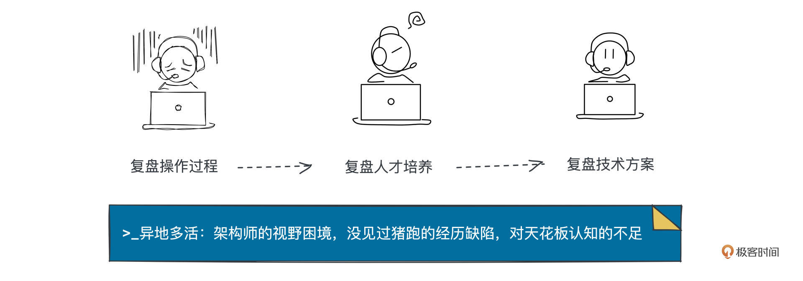

- 01 小厂项目：做程序员不难，难的是做职业程序员.md.html
- 02 小厂创业：做出一个产品，卖给所有人.md.html
- 03 淘宝HSF：能让淘宝出重大故障的就那批人.md.html
- 04 淘宝消防队：真正最优秀的程序员不应该是英雄.md.html
- 05 HBase_T4：Leader最重要的，说白了是要赌未来.md.html
- 06 异地多活：技术圈子的人，见过猪跑很重要.md.html
- 07 运维团队：我能干，只是我不想干而已.md.html
- 08 基础团队：研发效能部门，解决不了研发效能问题.md.html
- 09 统一调度：只是问题非常多而已，摔出来就行了.md.html
- 10 出走大厂：离职？还是不离职？这是一个问题.md.html
- 11 CEO心得：大厂出来创业，最大问题是对钱没概念.md.html
- 团队：在人身上，你到底愿意花多大精力？.md.html
- 开篇词 这一次，我们来采访毕玄.md.html
- 成事：技术人最大的问题就是情怀化.md.html
- 文化：你所在的团队，有多少人敢讲真话？.md.html
- 方向：技术演进，到底该怎么思考未来？.md.html
- 架构：架构师只是个角色，不是个岗位.md.html
- 番外：一位险些没上得了大学的青年，如何开启计算机征程.md.html
- 捐赠
06 异地多活：技术圈子的人，见过猪跑很重要
你好，我是叶芊。- - 上一讲主要复盘了容器项目T4从立项到组织、落地的过程，今天我们聊的主题是异地多活，这是毕玄第一次做大的系统级架构演进。- - 作为14年阿里职业生涯中的三大亮点之一，当时他要面对上千人，做一场世界上完全没有参考方案的架构，大家都认为做得很成功，但身为总架构师的他却说“这个项目我做得不好”。- - 他遇到了哪些问题？解法上又有哪些缺陷？我们开始今天的复盘会。
- 极客时间：看你的经历，T4之后就是异地多活了？是你主动的还是被动分配的？
毕玄：说分配的话，异地多活也能算，因为当时刚好是我转岗。
当时2013年T4我做的太难了，集团各种阻力，再加上运维侧支持力度不够，我那个时候在核心系统部正明那，就决定转去运维团队，因为我觉得如果我在运维就可以把T4落地了。
我就去了那边，正好运维的人跟我说现在要做异地多活，要不你来干？因为异地多活在前一年其实失败了。
极客时间：做过一次了？失败是什么原因？
毕玄：淘宝已经做过一次，蚂蚁也做过一次，也失败了，因为技术上还有很多问题没解决掉。所以就任命了两个新的架构师，我负责淘系的异地多活，俊义负责蚂蚁的异地多活。我们俩各自做了一套方案就开始落地了。
异地多活的难点是因为全世界完全没有可参考方案。Google虽然有全球部署，但广告搜索不一样，比较简单，腾讯也有，但腾讯是社交也比较简单，交易类型的网站一家都没有，我们最早本来想看亚马逊，结果发现他也不做了。到这里我们就很痛苦。
我们第一次开会，下面各方技术都问我，这个项目的方案是什么？我说这个方案现在还不知道，等我们先摸索一下。下面全听傻了，说还能这样。所以这个项目就很槽糕，我们花了一年左右来摸索方案到底是什么。
极客时间：一年出方案感觉挺久的，当时你们是怎么做的？
毕玄：做这种大的架构，一般是你首先有了一个系统全貌，其次你有了解决的思路，你就可以大概知道我需要哪些人来帮我，然后你去找各领域的人，告诉他我的思路是这个，你看这个系统里怎么改能做成这样，慢慢拼出一张图。
但是异地多活是我第一次做这么大的，刚开始的时候确实很难，因为你不懂一个这么大的系统它涉及哪些地方，你又没办法让人跟你讲，因为涉及的人太多了，必须要你先提一个思路，然后大家开始探讨。
所以我们先有了个大概想法，但这个想法多成熟肯定是不知道的，只能先做一部分看看。但是因为没有全貌，不知道要改哪些，一开始就漏掉了很多，第一版设计方案最后要上线了我们才发现还有一堆要改的东西漏改了，然后临时去做那堆的方案。所以主要问题就是漏，漏这漏那。
花了半年多，我们逐步把方案试出来了，方案清楚了后面就很简单。但是前面比较难，如果有参考，你也有信心，大概也知道怎么做，一切都会好很多。
极客时间：边试边做，不会有人质疑你吗？
毕玄：我现在觉得跟信任有很大关系。当时做这个项目，我上面所有的Leader没有一个人过问我，也没有人挑战我，否则一定会很多人挑战，这啥也不知道就敢上线，你胆子也太大了。
极客时间：会不会因为别人没法挑战？他也不知道方案。
毕玄：对，所有人都没有方案，但即使后面有了方案，还是有人会挑战觉得你们这方法也不好，不靠谱，有没有更简单的？但我们比较强硬。
当时异地多活我是面对上千人，做完我刚好P9P10晋升，面试就有人问：这些人都不向你汇报，为什么要听你的？我说最关键的就一点：因为我还掌握着所有人的机器。你要机器是我给你的，我给你的就是异地的机器，所以你必须配合我做异地的方案，如果你不做，我无所谓，但你上线肯定会出问题，反正你想逼我给同一个地方的机器我是给不了的，没有，你找谁都给不了。
极客时间：这好强硬，不会反弹吗？
毕玄：业务方很多抱怨，所以我后来跟很多人总结说，这个项目做得不算非常好。
而且从团队层面上来讲也不好。当然大家都认为很成功，项目组得到了很高的评价，也能看到我因为这个被晋升了，但这个项目里同样被晋升的人太少了，当然还有一些低级别的晋升，但高级别的差不多就我一个。这就是最大的败笔。
一个项目，如果对公司有非常大的价值，理论上应该有非常多的人被晋升，这也是你在公司能更好做成项目很重要的方面，因为各方都获得了利益。你想，如果只有你一个人获得利益，肯定是有问题的。所以异地多活做的整个过程，抱怨非常大，只是因为我们确实相对强势，但这种强势后面其实也会引发一些问题。
极客时间：但最后异地多活也确实是做成了，影响力也比较大，大家可能也没法说什么吧？
毕玄：如果没做成，那肯定挂了。但即使成了，还是会有人有很多看法，这个我也认。
因为对一家公司来讲，以战养兵是最重要的，你一个这么大的战斗，竟然没有培养出很多的人，这确实有问题，我是承认的。
极客时间：没有培养出人？具体是什么原因，人才没有历练到位吗？
毕玄：可能很多是曝光的原因。比如异地多活对外曝光全是我，讲各种方案等等，后来其他的项目比如统一调度，我们就会注意让更多人曝光，哪怕有些演讲看起来好像很不技术，但我们觉得对公司来讲这还是蛮重要的，公司应该看到更多人才。
因为一个这么大的项目，总不可能是一个人就干成了，肯定是有很多人一起，但是就看这些人有没有机会被更多高层知道。说实话高级别晋升，贡献很重要。但高层会认为那不就是他吗？其他人做了什么？高层认为就因为他，所以做成了。其实不是这样。
极客时间：一个项目，对贡献曝光上的关注，是不是参与的人越多，越重要？
毕玄：对做非常大的项目很重要的，越是大项目，越要把大家团结住。
后来再做项目，我就会特别关注参加了这个项目的核心人员，他们情况是什么，有多少人会因为做了这个项目被晋升上去。如果比较多，说明这个项目不仅有个很好的成果，还让整个团队的人得到了很好的成长，那这就是一个非常好的项目。
你想，大家一起做了一个很大的事情，对公司有很大贡献，但是只有你有成绩，下面的人没有被认可，那这些人会很受不了，我明明干了很多事情，最后为什么还是没有得到认可。业务方就更不爽，因为他觉得这又不是我主要的事，浪费了我很多时间，我什么也没得到，然后你们都得到了，替你打工。
再加上光环如果过度集中在一个人身上，那个人会成为众矢之的，肯定是这样。因为其他人会觉得我无非是成就了你，所以后来做很大的项目我们会特别注意，不要塑造一个神，不是好事。
极客时间：就项目曝光这一点上，现在的技术大会阿里确实会有很多人出来分享，是你说的为了增加曝光吗？
毕玄：对，阿里有几年是高峰，现在可能少一点，都是去站个台。
极客时间：现在不多了是为什么？
毕玄：以前对外分享，内部的定调就是在中国的自由分享，希望跟大家交流，因为技术很需要聊，你的想法可能跟别人不一样，而且可能别人干过，你实际上是想找一个干过的人跟你聊一下，看看自己想的有没有问题。但后来我们只能去树立技术品牌。
极客时间：做技术品牌的转变，是因为什么？你们是什么时候开始做的？
毕玄：2009年。当时我们第一次校招，出去之后打击太大了，因为在09年，我们认为淘宝已经是集团最牛的一家公司了，淘宝的人在阿里横着走，因为说实话其他公司量比我们小非常多，而且我们也逐渐接近盈利，当然觉得自己是最牛的。但我们出去才发现根本不是这么回事。
学生都说，淘宝是什么公司？不就是卖东西的，那你们是不是专门帮人卖货？他们觉得肯定是雅虎、阿里研究院、B2B这些，因为B2B是香港上市公司，他们觉得肯定这几家好。淘宝？除非前几家我都没面过，那我再来你们这试一下。我们就深受打击。
所以淘宝从09年决定做技术品牌建设，就参加了很多技术大会，包括QCon等等都是这个目的。这也是菲青提议的，要树立起淘宝是整个阿里集团技术非常好的一家。
极客时间：开始是交流，到做品牌，现在就站个台？这个变化是为什么？
毕玄：对从出来交流的人你也能看出来，阿里以前参加大会都是相对资深的，高级别的，但现在阿里高级别的人都不出来了。
近几年阿里的风格是，国内都派相对年轻的、有潜质的人练习他的分享表达能力。因为我们觉得工程师要往更高层走，你表达能力必须要的，毕竟你不是一个人做，除非都想成为多隆那样一个人守到底，但在现代化软件下也很难，一个人再强也不行，所以公司肯定需要这种类型的人。
剩下更资深的人都去国外了，拜访顶尖的公司，顶尖的名校。公司，我们只拜访Google、Facebook、AWS这些最顶的，其他的都不太见，他们对我们有兴趣，但我们可能对他们没有兴趣；然后学校，我们去拜访斯坦福、麻省这种规格的。因为后来我们觉得，只有跟这些人聊，互相才有一定的交流空间。
极客时间：交流空间？是指对话背后公司的技术问题吗？
毕玄：因为说实话到现在为止，中国很多公司去拜访Google都没有交流，其实还是个学习状态。包括我前几年带队去Google拜访也还是这种状态，都是我们问Google技术上的挑战，看他们是怎么做的，然后我们问完，问他们对我们有什么问题，没有任何问题，因为Google能从你问的问题推测出你的状况，就没有任何兴趣跟我们聊。
像Facebook就不一样，阿里很明显，以前也几乎全是我们问他问题，但现在Facebook会问我们很多问题，技术地位已经不一样了。
极客时间：推断你的发展水平？
毕玄：对，我们以前问他们很多问题，他们会说这个问题是我们七年前做的什么什么东西，有论文讲过了，你可以去看。这就很尴尬。
跟现在中国很多公司问阿里一样，比如说问分布式，阿里都告诉你我们是在2008年做的，相当于是已经是14年前了，那你觉得，对阿里来讲，讨论这个问题有多大意义？就没有了，因为阿里觉得我已经成功，不想跟你们讨论这些了。所以这就是纯单向交流，双向要求很高的。
这几年特别明显，很多大公司都这样，因为他们的水平确实已经能跟国外顶级对话，对国内的很多交流就没有任何兴趣。有一些公司愿意去，肯定是为了别的目的，比如说卖货这种商业诉求，才去做纯单向。
极客时间：不只是讲的人没兴趣，听的人如果没有那个场景不遇到那个技术问题，是不是也听不明白？
毕玄：听的人，听完也只是觉得啊好牛，然后就没有然后了，就走了。
所以最高质量的交流肯定是一个非常小的圈子。但那个小圈子是很难进的。我后来带团队都说，比如去硅谷，如果你能找到硅谷这个领域最顶级的一帮人，大家一起吃个饭，这就决定了你有没有进圈。
其实所有的顶级领域最后都是混圈。只不过计算机的这个圈子相对来讲更难靠“混”混进去，因为这个圈子的人彼此文人相轻，他关键看你做过什么，不会因为你是某公司负责某团队的人就觉得你很牛，不会的。所以混进技术圈子难度太大，但你如果能进这个圈子，说明你确实得到一定的认可。
极客时间：混到这种顶级圈里能拿到什么？一些前沿问题的参考方案？像异地多活当时因为没有参考方案踩坑很多。
毕玄：对。因为面对一个问题，如果你不知道这个世界上已经有的、最好的解决方法到底有哪些，你就会觉得自己的解决特别牛，但其实可能是别人玩剩的。
架构跟写代码不同，架构最大的问题是如果解决思路有问题，最后的返工可能非常吓人。
阿里在这个地方犯过无数错误。以前做分布式的时候，我们只知道要做成分布式，但我们没有想清楚，一个公司的整个系统换成分布式以后，对团队会带来什么挑战？会有哪些问题？这些如果在架构层面没有解决，后面再解决就很难。
现在我们会说“见过猪跑是很重要的”。以前我们觉得见过猪跑有什么重要的，反正我现在没想好，以后可以再补嘛，我可以慢慢练成见过猪跑。但是架构这玩意，你现在没看到，未来要补的时候代价可能极大。所以架构师，对视野的要求非常高。
极客时间：架构的“看到”和“做到”，哪个要求会更高一点？
毕玄：不是一个维度，因为“看到”有些时候是经历问题，另一个就是天花板问题，你有没有办法知道天花板。
中国其实很多人并不知道天花板，有人会说看一些大会就可以了，认为大会展示的是天花板。但其实可能根本不是。而且现在大会里还有很多商业目的，就更完蛋，其实他就是忽悠你的，在带节奏，但你不一定知道，因为你外行，这很正常。
极客时间：那你们去哪里看天花板？
毕玄：其实要看学术论文。你看Google对这个世界的影响，在技术基础层面影响非常非常大，但它所有影响都体现在哪里？不是技术大会，是它发表的论文，虽然大家老觉得发学术论文都是忽悠，但必须说，真正改变这个世界技术的都是学术论文。只不过学术论文里你也要挑，因为混的确实也很多。
极客时间：挑论文，有什么具体方法可以讲讲吗？
毕玄：最简单的办法，当然是先找你的领域含金量最高的学术会议，因为他论文的水分相对低一点，而且工程界的也会去那发，像Google发论文，很大目的是为了让他们那几个人去评美国的科学院院士，否则工程界的人根本不想写论文的，没有必要，但要评院士他就必须写，就写了那几篇。
看这种论文，第一你可以大概判断一下方向，因为在这种含金量很高的会议上，他发的论文肯定解他的问题，非常具备前瞻性，或者非常具备挑战，或者价值非常大；第二他解决的方法肯定是论证过的，也具备一定创新的。因为论文要的是创新，不能说和别人解过的一样。
加上工程届的论文，因为是工程公司发的，像Google这种公司都是工程类，他肯定会有实践兜底。当然必须说有真有假，既使Google也是，他以前还发过Omega之类的调度系论文，但Omega根本就没有大规模应用，他讲的是很美好的一个东西。
技术上是可以编的，但你最后要了解一下工程上它到底怎么落地，到底碰了什么障碍。这些肯定不会在论文里讲，你需要自己验证，你会听到很多声音，因为技术圈声音很多，有真有假，这就取决于你自己有没有能力判断。学术论文也一样，你要跟这些教授直接去聊或者侧面打听到底什么情况。
极客时间：为了看到天花板，成本应该挺高的，淘宝是怎么做的？
毕玄：以前我们每年会专门关注这种顶级大会，不断研究里面发表的所有论文，去判断我们在这个问题上现在的解决方案跟他们对比大概是什么情况，未来是不是有更创新的方向可以去尝试。
因为对公司来讲，如果一个架构师不知道天花板，肯定不是个足够好的架构师。以前很多人会在PPT上写，我的解决方案是全世界最好的，但你得说清楚你为什么最好，如果你有论证，那我们可以认。
或者你说现在不是最好的，但你知道自己的位置，这种也可以，因为这个跟你公司的工程状况有关，工程落地是有节奏问题的，知道最好的是那样，只是我现在做不到，没关系，所有人都这样。如果知道天花板了，就不怕，不知道，你可能也不怕，但是对公司来讲就是一个很可怕的不怕。
极客时间：你有怕的阶段吗，当时做异地多活就没有参考方案？
毕玄：我也不太怕，因为我觉得大不了自己折腾。像2013年做异地多活，我们心里当然有担心，但关键是这个问题对公司来讲是一定要解决的，那就没啥，那就试。
因为工程说白了，毕竟不是科学难题，做工程，实在不行是可以试出来的，只是节奏会长，而且有可能不那么可控，成本比较高。这个主要看信不信，你自己觉得可以搞，就可以。
极客时间：那你们招人的时候，会对天花板的认知有要求吗？
毕玄：我们面试判断的核心就是看你对自己项目背后技术的理解程度，包括这个项目的问题、你的解法、业界对这个问题的解法、最后你为什么选择了这个方法而没有选择业界的方法。
极客时间：这个要求高吗？
毕玄：非常高，如果你能回答得非常好，说明你的选择做得非常理性，这种我们觉得简直是太完美的候选人了。
但事实上知道天花板的人很少了，这是要花精力的。很多人不愿意干，觉得没有必要，不就是个需求？我干了就行了，你管我怎么干的，先不先进什么的都不重要。但是有些对技术非常有热情的人，他其实很有兴趣去了解，这个差别非常大的，而且很明显。

极客时间：天花板的问题，因为阿里是大公司，有资源可以让大家去国外去交流，但是很多中小公司没有，怎么办？
毕玄：我们觉得也可以关注，不一定要跟别人直接聊，但是大概要知道一下，比如顶会论文现在都在探讨什么问题，有什么创新性的解决方法。
如果你发现，顶会论文关注的领域跟你的领域一毛钱关系都没有，这说明他们认为这个领域目前没有什么可突破的空间，那就要赶快想下一步了。
极客时间：这是需要主动去关注？
毕玄：那必须主动，被动不可能的。架构师没法被动。
极客时间：但是有些架构师可能是被安排上去的，对天花板的了解不是很好，怎么办？
毕玄：这也确实存在，你被推到了这个位置，不得不去解决这个问题。有些人是这样成长起来的，很正常。
但这就太看命了，而且对公司来讲，可能会稍微有点问题，因为问题你是解了，但是解法可能有问题，最后会给公司埋下巨大的坑。
所以回顾当年，大家都觉得淘宝做得特别好，但事实上我们一帮人看，都觉得自己做的简直了糟糕到不行，有些就是我们当时埋下的坑。但如果让我们再去做，会完全不一样，这说明我们确实比当年更好，因为我们现在是见过猪跑的，也知道天花板在哪里。
当年我们其实是知道一些东西的，包括Google发的一些论文。但当时我们看了很多觉得做这个没有意义，这就是我们的判断，过了几年后就发现，我们确实错了（笑），其实是很有意义的。
极客时间：有没有部分原因是你们的业务没有到那个地步，还认识不到Google讲的东西的意义？
毕玄：不是的，我们当时也快出现那个问题了，但是我们没有判断出来到底会有多严重。但Google是经历过的，我们其实应该相信的，要相信一个见过猪跑的人他说的是对的，不要太自以为是，觉得自己想的会比他更好。
工程的很多问题，没有经历，凭空想是想不出来的，比如阿里这么大体量，他在技术上到底面临了什么问题，我们在里面都不一定能想得出这个问题是啥，外围就更不提。所以很多人很难成长起来，因为做一个商业系统的机会就很少，你说你在家里想一个商业的系统是怎么做出来的，会面临什么问题，说实话这就是空想，跟这些真正经历过的人去比是不大可能的。
水友讨论区
对谈到这里就暂时结束了，主要聊的是当年毕玄那伙人做异地多活的故事。
异地多活的技术资料阿里之前公开很多了，这次访谈没有太细致地聊这一话题（如果你对技术细节感兴趣，可以看看拓展阅读的链接），重点放在了对整个项目的复盘，从牵头，到具体落地，到收尾，以及后期曝光的全过程。
在对谈中，我印象最深刻的是很多人觉得异地多活做的很成功，但他却反思自己做项目的方法有很大缺陷，强调做大项目不要塑造一个神，不是好事。
- “在公司能更好做成项目，很重要的方面是各方都要获得利益”，关于这一点，你怎么看呢？在自己参与的项目里，或者见证过别人的项目，你有相关案例可以分享讨论吗？
另外今天也重点聊到架构师如何拓展视野，毕玄认为“对架构师来说，见过猪跑是很重要的”，总结架构师会面临两大困境：没见过猪跑的经历缺陷、对天花板认知的不足。
- 对这两个问题，你怎么看？平时是怎么处理的呢？
- 关于天花板问题，毕玄的建议是先找自己的领域含金量最高的学术会议，如果你有兴趣也有这方面的需求，可以实操一下，如果有帮助，记得回来还愿 :)
如果你有其他有感想的话题，欢迎留言，参与讨论，说不定在留言区你能结识同领域的开发者哦。
下一讲我们将讨论毕玄的第二大段转岗经历——研发转运维，这段经历我觉得影响了他后面的整个职业发展，下一讲见。
拓展阅读
1. 这是一扇传送门，后面有一讲我们会专门讨论架构师到底该怎么提升，毕玄也“被迫”总结了一些方法论，期待和你再会。
2. 如果你对天花板感兴趣，可以看这篇毕玄之前写的拓宽技术视野的方法论：如何避免成为井底之蛙
3. 异地多活的具体技术细节，感兴趣可以看这个来自阿里开发者的链接：“异地多活”设计辣么难？其实是你想多了！
4. 之前InfoQ也就异地多活的项目采访过毕玄：从冷备到多活，阿里毕玄谈数据中心的异地容灾
5. 《超级访谈：对话张雪峰》中也提到饿了么做异地多活的经历：不够坚定：异地多活没有一步到位的遗憾
© 2019 - 2023 Liangliang Lee. Powered by gin and hexo-theme-book.